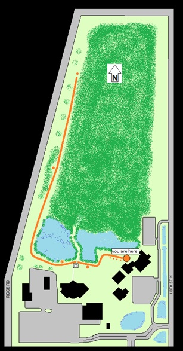
Mercury, Venus, Earth, and Mars are found along the path to the west of the Sun patio, with Jupiter around the corner. Continue straight past the pavilion to find Saturn and its rings, then around the pond to the north for Uranus and Neptune.
The Solar System to Scale: Each planet on the solar system walk is represented by a concrete marker on the ground. The sizes of the planet markers are all on the same scale as the Sun (the patio). However, because space is so vast, the distance scale is 100 times smaller than the size scale. Walking 1 foot on this path represents about 1.5 million miles!
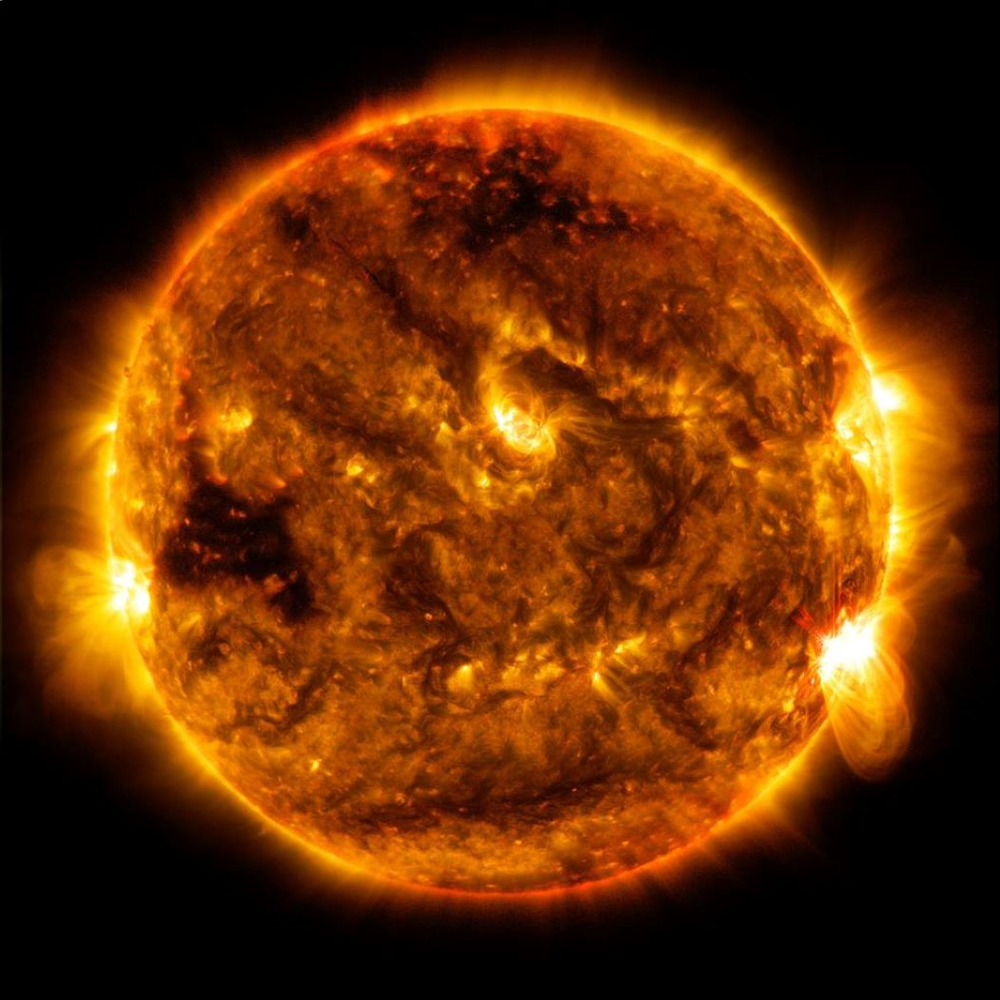
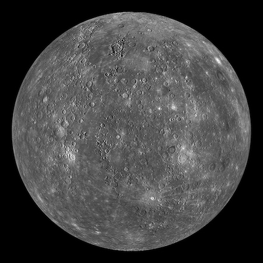
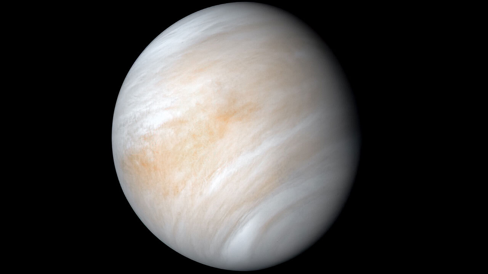
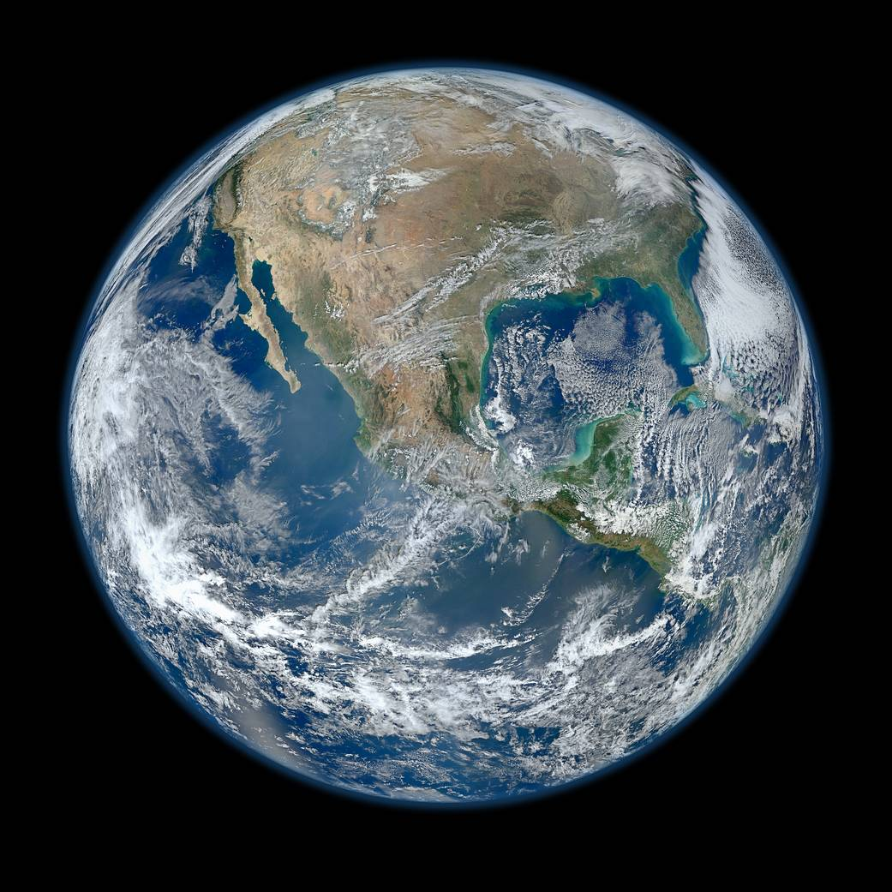
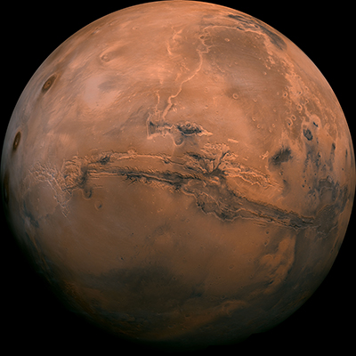
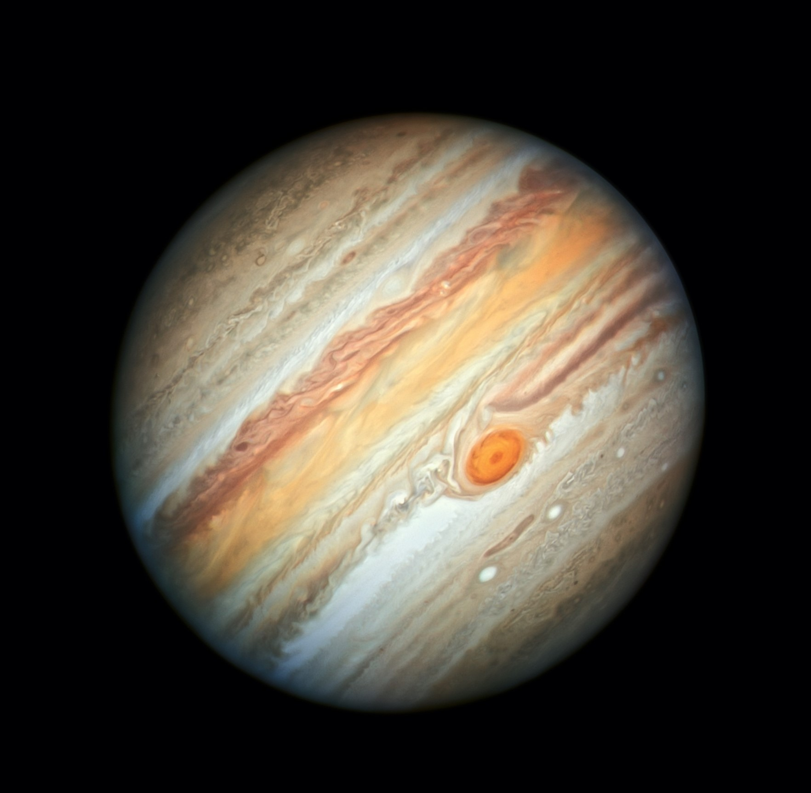
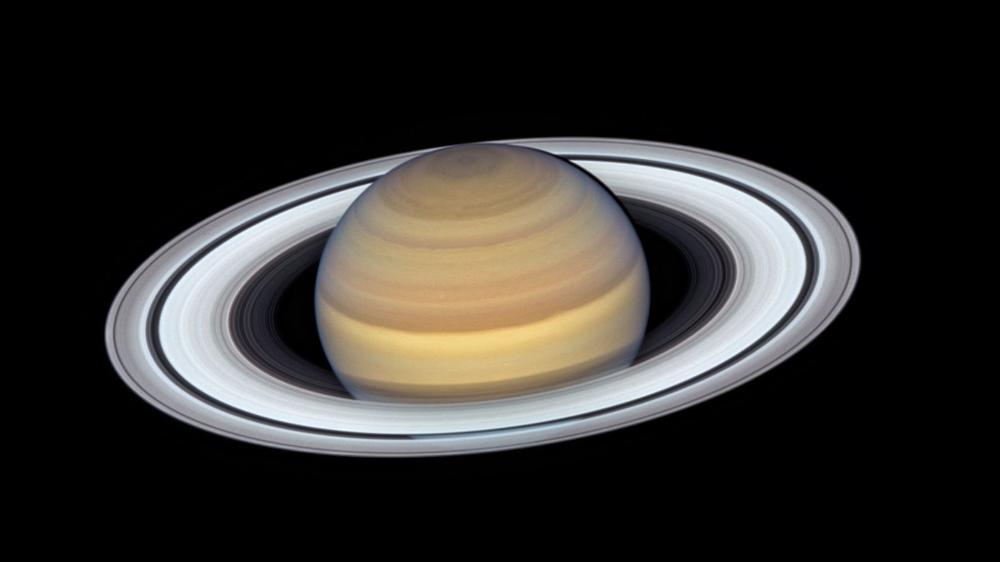
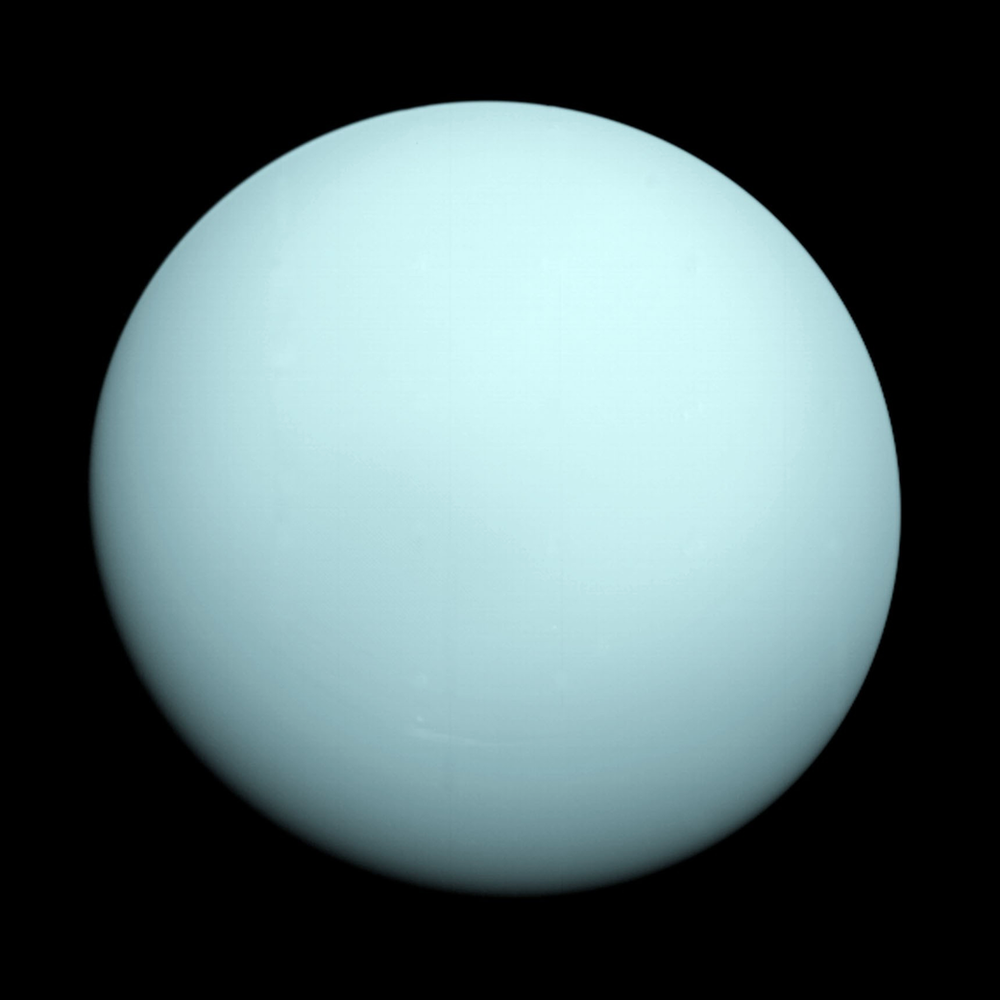
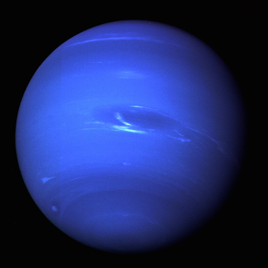
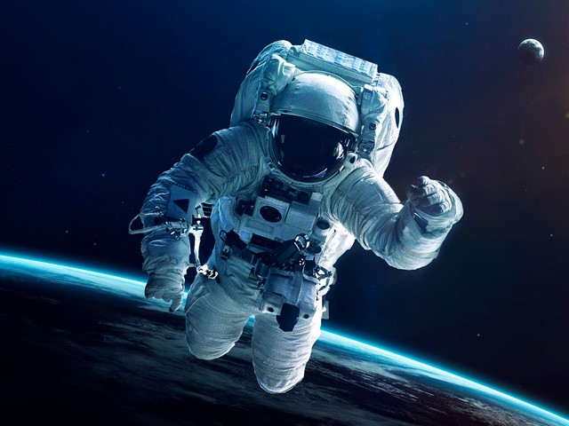